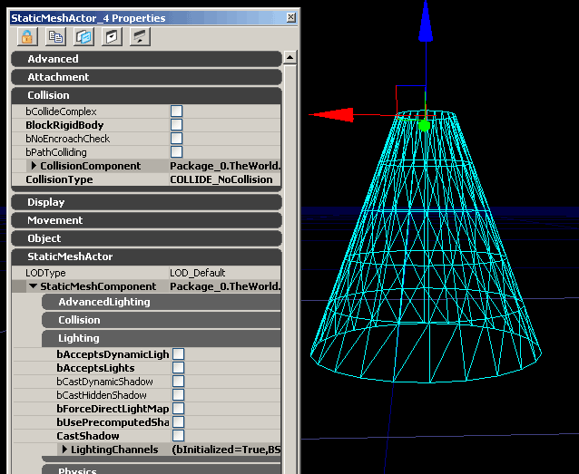
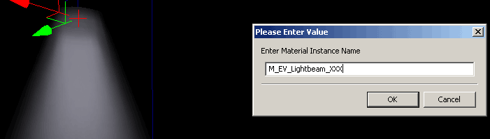
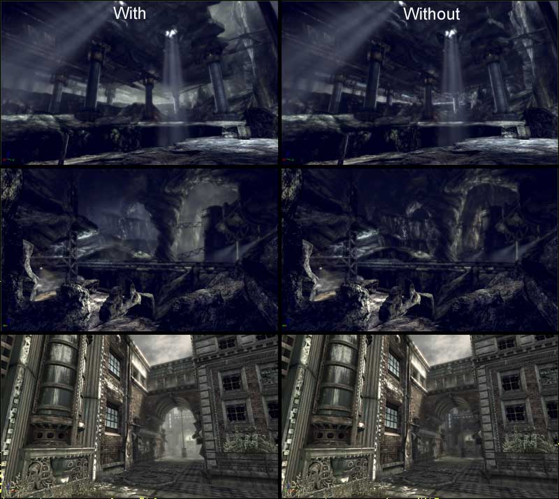
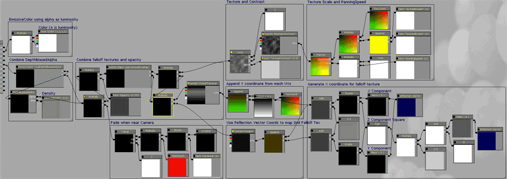
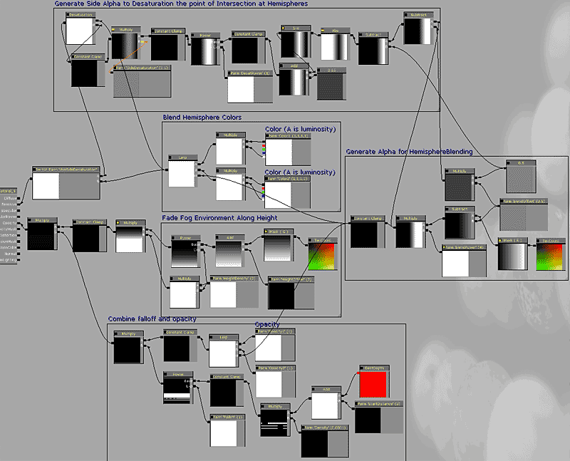

UDN
Search public documentation:
VolumetricLightingGuideJP
English Translation
中国翻译
한국어
Interested in the Unreal Engine?
Visit the Unreal Technology site.
Looking for jobs and company info?
Check out the Epic games site.
Questions about support via UDN?
Contact the UDN Staff
中国翻译
한국어
Interested in the Unreal Engine?
Visit the Unreal Technology site.
Looking for jobs and company info?
Check out the Epic games site.
Questions about support via UDN?
Contact the UDN Staff
ボリュメトリック ライティング ガイド
はじめに
パッケージ構造
- FalloffSpheres
- FogSheets
- Lightbeams
- FogEnvironments
 上図からわかるように、各タイプには 2 つのサブグループがあります。各グループにマテリアルとメッシュがあるのは、一緒に使用されることを意図したもので、例えば lightbeam メッシュの上に fogsheet マテリアルを配置するようなことはしないでください。
上図からわかるように、各タイプには 2 つのサブグループがあります。各グループにマテリアルとメッシュがあるのは、一緒に使用されることを意図したもので、例えば lightbeam メッシュの上に fogsheet マテリアルを配置するようなことはしないでください。
アーキタイプ

唯一の派生クラスは FogEnvironment アーキタイプで、これには DepthPriorityGroup=SDPG_Foreground と bAllowCulldistanceVolume=False が設定されています。ワールド内の配置

インスタンスの作成

後でインスタンスを探すときに識別しやすいように、名前には用途の簡略な説明を含めます。この方法で作成されたインスタンスは、配置先のレベルのレベル パッケージ内に格納されます。同時に、新規作成インスタンスのマテリアル インスタンス エディタが自動的に開きます。 マテリアルのインスタンス化の完全な解説については、 インスタンス化したマテリアル ページを参照してください。ボリュメトリクスの種類
Falloff Spheres (フォールオフ球)
FallOff Sphere (フォールオフ球) は、最も単純なボリュメトリック プリミティブです。これを使用して、ライトから漏れるかすかな輝きから、コロナ (光環) 効果までもシミュレートすることができます。親マテリアル
単純な放射カラーベクトルで構成され、CameraVector と TangentVector(0,0,1) を持つ Dot Product (ドットプロダクト) を使用してエッジのフォールオフ/非表示効果を提供します。カメラに近づくとフェードアウトして、クリッピングが目立たないようにするピクセル深度設定もあります。 オプションとして、StaticSwitchParameter で切り替える depthbiasedblending (深度バイアスブレンド) も用意されています。使用法は「インスタンス設定」で説明します。球体をテクスチャ化するには、どこかでシーム (継ぎ目、UV 展開するための切り目) を入なければ (少なくとも、重なった多数のサンプルを使用しなければ) ならないので、テクスチャのパニング オーバーレイ オプションはありません。
インスタンス設定
公開されている FalloffSpheres インスタンス設定の完全なリストは次のとおりです。ScalarParameters:
Density (密度): depthbiasedalpha (深度バイアス アルファ) の DepthBias (深度バイアス) を調整します。この設定は、UseDepthBiasedAlpha SwitchParameter がオンに設定されている場合のみ有効です。 Opacity (不透明度): ビームの不透明出力に、指定された値を乗算します。 FalloffExponent (フォールオフ指数): Dot Product (cameravector、tangentvector) で指定されたエッジフォールオフ設定を変更します。 Distance (距離): カメラとの交差を隠すためのフェードアウトの発生距離を制御します。StaticSwitchParameters
UseDepthBiasedAlpha (深度バイアス アルファを使用): デフォルト設定は OFF (オフ) です。これをオンにすると depthbiasedalpha が追加され、ワールドやプレーヤーとの交差を隠します。コスト: 12 インストラクションVectorParameters
Color (カラー): falloffsphere の単色の放射カラーです。明るさは Alpha (アルファ) で制御してください。
静的メッシュ情報
このメッシュは円筒状に展開 (unwrap) された UV を伴う単純な球体プリミティブです。FogSheets
Fogsheets (フォグシート) とは、基本的には 2 つのポリゴンジオメトリシートに、半透明のマテリアルが適用されたものです。任意の環境内に配置して、前景と背景要素の間に距離的な分離を形成したり、スポット的なかすみを作り出すことができます。レベル全体に濃い heightfog をかけると、暗いはずの領域が白っぽくなるので、これはなるべく避けたいものですが、フォグシートを使用すると、適当な場所にだけ濃い霧をかけることができます。 フォグシートをうまく使いこなすことで、主要なエリアを浮かび上がらせて、混雑したシーンをすっきり見せることができます。下の図では、アーチ型の戸口にフォグシートを使用してプレーヤーの視線を引き付け、「Follow the light」、つまり光の方向に進ませています。 以下は Gears of War のフォグシートの使用例です。
大きなフォグシートは控え目に使用するようにしてください。近くに何枚も重ねると多量のオーバードローが発生するので、これは実行しないでください。親マテリアル
fogsheets のマテリアルは、FalloffSpheres のマテリアルに非常に似ています。Color、depthbiasedalpha に加えて、靄 (もや) の動きを表現するパニング テクスチャ オーバーレイのパラメータもあります。
インスタンス設定
公開されている FogSheets インスタンス設定の完全なリストは次のとおりです。ScalarParameters
Density (密度): depthbiasedalpha (深度バイアス アルファ) の DepthBias (深度バイアス) を調整します。この設定は、UseDepthBiasedAlpha SwitchParameter がオンに設定されている場合のみ有効です。 Opacity (不透明度): ビームの不透明出力に、指定された値を乗算します。 FalloffExponent (フォールオフ指数): Dot Product (cameravector、tangentvector) で指定されたエッジフォールオフ設定を変更します。 Distance (距離): カメラとの交差を隠すためのフェードアウトの発生距離を制御します。 TextureContrast (テクスチャのコントラスト): オプションのパニング テクスチャ オーバーレイのコントラストを制御します。0 に設定するとテクスチャ オーバーレイ = 1 となり、意味がありません。1 に設定すると不変値のテクスチャ出力が行われます。この設定は、UseTextureOverlay スイッチパラメータがオンの場合のみ有効です。 PanningSpeed (パニング速度): 速度を制御します。オプションのテクスチャ オーバーレイのパニングの移動速度を制御します。 TextureScale (テクスチャスケール): オプションのテクスチャ オーバーレイのスケーリングを制御します。StaticSwitchParameters
UseDepthBiasedAlpha (深度バイアス アルファを使用): デフォルト設定は OFF (オフ) です。これをオンにすると depthbiasedalpha が追加され、ワールドやプレーヤーとの交差を隠します。コスト: 12 インストラクション UseTextureOverlay (テクスチャオーバーレイを使用): デフォルト設定は OFF (オフ) です。オンに設定すると、煙の動きに対応する 2 つのパニング テクスチャがフォグシートに追加されます。コスト: 9 インストラクションTextureParameters
MultiplyTexture1 (テクスチャの乗算1): オプションのテクスチャ オーバーレイに使用する最初のテクスチャ。 MultiplyTexture2 (テクスチャの乗算2): オプションのテクスチャ オーバーレイに使用する 2 番目のテクスチャ。 FalloffTexture (フォールオフ テクスチャ): 不透明部に使用されるテクスチャにこれを重ねることができます。デフォルト設定は、白いぼやけたドット模様です。VectorParameters
Color : fogsheet の単色の放射カラーです。明るさは Alpha (アルファ) で制御してください。
静的メッシュ情報
1 つの平面マップと、2 つの単純なポリゴンメッシュメッシュを使用します。LightBeams
LightBeams は、おそらく最もよく使用されるボリュメトリック プリミティブタイプです。UT では、注意を引くためにこれを最強の光源から発しています。親マテリアル
ライトビームのマテリアルは、最も複雑なボリュメトリックタイプの 1 つです。ボリュメトリック形状の表現のまま、複数角度から見えるフォールオフを処理しなければなりません。これを達成するために、メッシュの UV の Y 座標を使用しながら、反射ベクトルから X 座標を生成しています。これにより、カメラを円錐の軸方向に向けた状態で、マテリアルは円錐にフォールオフ テクスチャをマッピングすることができます。次に、球形フォールオフのフォームを組み合わせて、下から見たときの形状が壊れていないようにします。 このライトビーム マテリアルと静的メッシュの作成を説明した完全チュートリアルは、ボリュメトリック ライト ビーム チュートリアル を参照してください。ボリュメトリクスの仕組みを学習するには、このマテリアルを作成してみるのが一番良い方法です。
インスタンス設定
公開されている Lightbeams インスタンス設定の完全なリストは次のとおりです。ScalarParameters:
Density (密度): depthbiasedalpha (深度バイアス アルファ) の DepthBias (深度バイアス) を調整します。この設定は、UseDepthBiasedAlpha SwitchParameter がオンに設定されている場合のみ有効です。 Opacity (不透明度): ビームの不透明出力に、指定された値を乗算します。 FalloffExponent (フォールオフ指数): Dot Product (cameravector、tangentvector) で指定されたエッジフォールオフ設定を変更します。 Distance (距離): カメラとの交差を隠すためのフェードアウトの発生距離を制御します。 TextureContrast (テクスチャのコントラスト): オプションのパニング テクスチャ オーバーレイのコントラストを制御します。0 に設定するとテクスチャ オーバーレイ = 1 となり、意味がありません。1 に設定すると不変値のテクスチャ出力が行われます。この設定は、UseTextureOverlay スイッチパラメータがオンの場合のみ有効です。 PanningSpeed (パニング速度): 速度を制御します。オプションのテクスチャ オーバーレイのパニングの移動速度を制御します。 TextureScaleX (テクスチャのスケール X): オプションのテクスチャ オーバーレイの X 方向のスケーリングを制御します。 TextureScaleY (テクスチャのスケール Y): オプションのテクスチャ オーバーレイの Y 方向のスケーリングを制御します。StaticSwitchParameters
TextureParameters
MultiplyTexture1 (テクスチャの乗算1): オプションのテクスチャ オーバーレイに使用するテクスチャ。 FalloffTexture (フォールオフ テクスチャ): 不透明部に使用されるフォールオフにこれを重ねることができます。これは、Photoshop のライティングエフェクト フィルタを使用して描かれた円錐形のテクスチャです。VectorParameters
Color (カラー): ライトビームの単色の放射カラーです。明るさは Alpha (アルファ) で制御してください。
静的メッシュ情報
EngineVolumetrics パッケージには、異なる角度を持つ 3 つの円錐が既に含まれています。円錐の変型を追加するには、円筒を作成してエッジを先細にしてから、UV 内でシームが 1 つだけになるように展開します。UV マッピングはきれいに行うのが必須です。マテリアルの計算は接線空間で行われため、いい加減な UV マッピングでは、後で視覚的なひずみが発生する恐れがあります。メッシュの平面分割 (テッセレーション) が多くなるほど、最終結果のフォールオフがより滑らかになります (縦に 4 つにスライスされた 16 面分割の円筒で十分です)。 このライトビーム マテリアルと静的メッシュの作成を説明した完全チュートリアルは、VolumetricLightbeamTutorialJP を参照してください。FogEnvironment (フォグ環境)
フォグ環境は他のすべてのボリュメトリックタイプと異なり、アンリットの半透明のマテリアルで、前景 DPG でレンダリングされることを目的とし、基本的には heightfog に替わるものです。 シーン全体にかけて半透明のパスを常時レンダリングするため、絶対に必要な場面に限って控え目に使用します。 2 つの個別の半球で構成され、異なる側面からフォグのカラーと不透明度に変化を与えます。Unreal Tournament 3 では、これを使用してレベルの CTF Maps にチームカラーのフォグを作り出しています。 フォグ環境が機能するには、SDPG_Foreground の DepthPriorityGroup に FogEnvironment メッシュを配置しなければなりません。FogEnvironment アーキタイプにはこれが既に設定されていますが、このアーキタイプを使用しない場合はユーザーが各自で設定する必要があります。 次にメッシュの Drawscale を使い、メッシュのバウンダリがプレーヤー のカメラ移動範囲を超えた位置まで伸ばされるようにスケーリングします。 フォグ環境はシーン深度を使ってフォグのブレンドを行うため、Heightfog のようには半透明オブジェクトを処理しません。そのため、多数の半透明性を含むレベルでのフォグ環境の使用は推奨されていません。
フォグ環境はシーン深度を使ってフォグのブレンドを行うため、Heightfog のようには半透明オブジェクトを処理しません。そのため、多数の半透明性を含むレベルでのフォグ環境の使用は推奨されていません。
親マテリアル
FogEnvironments のマテリアルはメッシュのテクスチャ座標を使用して半球を生成し、高さのブレンドを行います。メッシュには複数の UV 座標があり、1 つはトップダウンの平面マップ、もう 1 つは横方向の平面マップです。シェーダーはこれらの座標値のみを使用して、ブレンドの発生に必要なものを作成し、さらにユーザーがブレンドを制御できるようにします。この厳密な制御については、インスタンスのセクションで説明します。
インスタンス設定
公開されている FogEnvironments インスタンス設定の完全なリストは次のとおりです。ScalarParameters:
Falloff (フォールオフ): シーン深度のフォールオフ指数。フォグの累積速度を変更します。 Density (密度): フォグ環境の密度を設定します。値は heightfog の密度値に似ています。 StartDistance (開始距離): フォグの計算を開始する距離を調整することができます。 BlendPower (ブレンド指数): 半球のブレンド指数を制御します。BlendOffset と連携して調整します。 BlendOffset (ブレンドのオフセット): 半球のブレンドの交差位置を制御する単純なオフセット値。 Opacity1: 最初の半球の不透明度を増加させます。 Opacity2: 2 番目の半球の不透明度を増加させます。 HeightDensity (高さ密度): フォグの垂直方向のフォールオフの鮮明さを制御します。 HeightOffset (高さオフセット): フォグの垂直フォールオフをオフセットします。 SideDesaturation (側面の彩度低下): 2 つの半球の間の交点で発生する desaturation (彩度低下、脱色) の量を設定します。レッドとブルーの間の転移点で発生する汚いピンク色を消すのに使用します。主な用途としてよく使われるケースは、レッドとブルーのチームの色分けです。 SideDesaturationPower (側面の彩度低下率): 半球の交差点中心から彩度の低下が及ぶ範囲を制御します。StaticSwitchParameters (静的スイッチ パラメータ)
UseSideDesaturation (側面の彩度低下を使用): デフォルト設定は OFF (オフ) です。これをオンにすると、レッドとブルーの間の転移点で発生する汚いピンク色を消すことができます。主な用途としてよく使われるケース - ctf マップ。コスト: 11 インストラクションVectorParameters (ベクトルパラメータ)
Color1 (カラー1): 最初の半球の単色の放射カラーです。明るさは Alpha (アルファ) で制御してください。 Color2 (カラー2): 2 番目の半球の単色の放射カラーです。明るさは Alpha (アルファ) で制御してください。